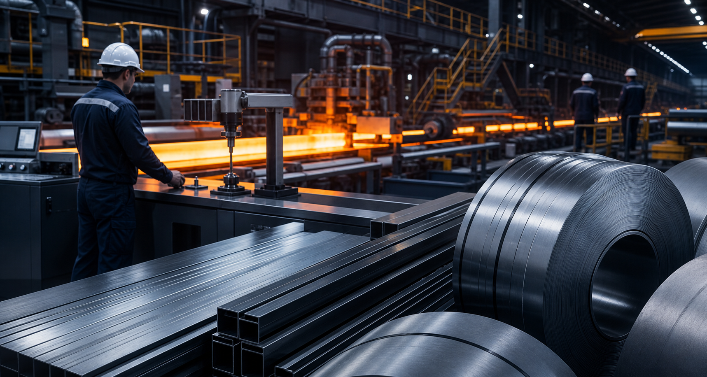

Created around national steel capability.
RINL's identity is tied to public-sector industrial development and the long-term role of steel in infrastructure, housing, fabrication and economic growth.
About RINL Steel
RINL Steel represents integrated production strength, a long-standing industrial role and a product portfolio built for construction, fabrication and engineering demand.
RINL's identity is tied to public-sector industrial development and the long-term role of steel in infrastructure, housing, fabrication and economic growth.
Product credibility in steel depends on repeatability. RINL's promise is built around controlled production, material consistency and quality-focused operating systems.
RINL's role reaches beyond the plant gate through product availability, distribution relationships, project relevance and commercial trust in the field.

The value of steel is proven at site, in fabrication and over long service life. That is why the RINL story is best communicated through production control, technical reliability and a product range that supports multiple steel-use categories.
RINL Steel should feel like a serious industrial source: clear in product communication, grounded in manufacturing capability and practical for buyers, dealers and future partners.
A maker-first enterprise where process, quality systems and production discipline inform the product promise.
A commercially usable brand for customers, dealers, project buyers and entrepreneurs evaluating the partner route.